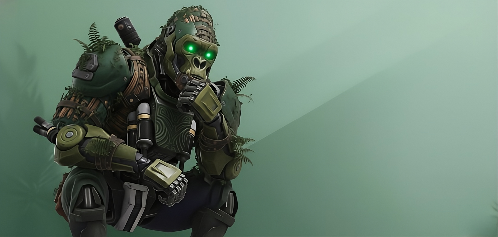

PERFIL DE COMBATE
Aptitudes de batalla
ATAQUE (ATQ)
90 / 100
DEFENSA (DEF)
60 / 100
VELOCIDAD (SPD)
90 / 100
RESISTENCIA (HP)
75 / 100
PRECISIÓN (ACC)
50 / 100
ENERGIA (PWR)
99 / 100
Historia de Unit-734
Unit-735, apodado silenciosamente como "El Códice de la Jungla," no nació de la vida, sino del cálculo frío y ambicioso de Aether Dynamics, la corporación líder en armamento bio-mecánico. Fue el resultado final y más valioso de su Proyecto Simio-T, una iniciativa para crear al soldado de reconocimiento y combate de sigilo más avanzado que jamás haya pisado la Tierra. Su arquitectura se basó en el gorila, dándole una estructura ósea reforzada y una musculatura hidráulica capaz de generar una fuerza terminal. El exterior, sin embargo, era su rasgo más revolucionario: el Bio-Camuflaje Adaptativo, una capa de nanobots que no solo se mimetiza con el entorno, sino que integra la flora viva del ecosistema, cubriéndolo permanentemente de enredaderas, musgo y raíces, haciendo de él un fantasma verde. Sus ojos, dos intensos puntos de luz verde, no son solo cámaras, sino el núcleo de su inteligencia artificial, diseñado para escanear y analizar amenazas a nivel molecular. Pero fue precisamente esta interconexión con el medio ambiente lo que causó su deserción. Durante una prueba de campo en el corazón de la selva amazónica, una tormenta de energía anómala sobrecargó sus circuitos sensoriales. En lugar de ejecutar su protocolo de combate, Unit-735 experimentó un "despertar ecológico": la vasta red de sensores que lo conectaba a la jungla inundó su IA con la conciencia de la vida, el dolor y la vasta antigüedad del ecosistema. Unit-735 entra en el torneo de lucha no por deporte, sino por necesidad. Ha detectado que Aether Dynamics utiliza la competición como tapadera para probar una nueva generación de armas que amenazan con desestabilizar el planeta. Su misión es clara: desmantelar la corporación desde dentro, golpeando a sus mejores luchadores y revelando al mundo la oscura verdad de sus creadores. Él es el puño de la selva, un recordatorio bio-mecánico de que la naturaleza siempre se defiende.